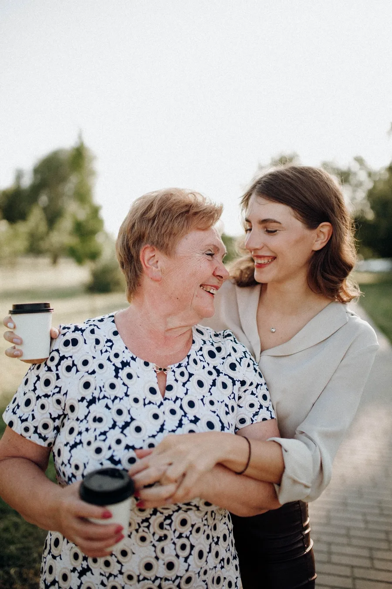
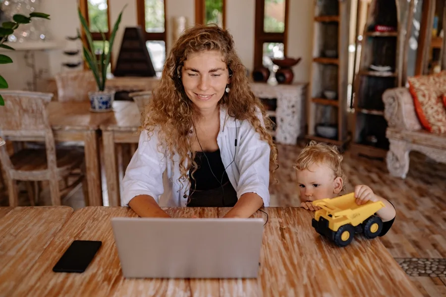

Coaching
Support for the one
everyone else counts on.
Not a program to follow. A person who gets it, so you can finally set down the weight of holding it all together on your own.


Helping others comes naturally. Helping yourself is another story.
Many cultures raise you to put family first, always before yourself. You give and give and give, until you abandon yourself. Filipinos have a word for the pull: utang na loob, a quiet debt of honor to the people who sacrificed for you. And one for the cost: naubos, poured out, empty.
But gratitude was never meant to become a lifetime debt. Somewhere, it turned into guilt, and love started to feel like something you owe.
You can honor where you come from without abandoning yourself. You still belong, even when you say no.
I help you move beyond the pressure of feeling responsible for doing it all, so you have more time and energy to be present for and enjoy what matters most.
If overthinking, overgiving, overachieving, or overextending have become your default way of moving through life, you are not alone.
The first step is recognizing the pressure pattern that’s making life harder than it needs to be.
Be there for yourself before you give to others.
To show up for others, you first have to build a steady relationship with yourself. That means giving yourself permission to feel, acknowledge, and speak your truth.
Your emotional well-being and physical performance are deeply connected—when one runs empty, the other suffers. I help you learn the tools you don’t have yet, so you can guide and care for yourself with confidence.
Over Syndrome™
nounThe internal pressure to do more, give more, and expect more of yourself until you lose sight of yourself and what matters most.
Meet Sharon
Meet Sharon. Not a program to follow. A person who gets it, so you can finally set down the weight of holding it all together on your own.
Answers to questions